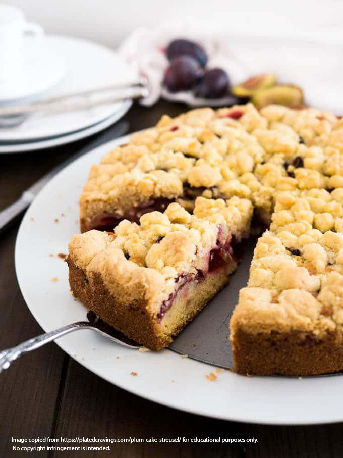

Mom's Kuchen

Plum kuchen is a traditional northeastern European dessert
This recipe is exactly as my mom gave it to me. You should
probably use your own common sense to vary it, since I don’t
think my mom has ever actually measured anything in her life,
when it comes to cooking.
Crust:
Ingredients
- 2 cups flour
- pinch of salt
- 1 tsp. Baking powder
- 1 package vanilla sugar (Oetker’s – 9 grams or .32 ounces)
- 3/4 stick of butter at room temperature
- 1 egg
- 3/4 cup of sugar
- sprinkle of cold water or milk or liqueur
Directions
- Mix everything together until you end up with a
sort of sticky cookie dough.
- Rub (additional) butter in your baking dish (I prefer a
light coating of pan spray).
- Press it into a jelly roll pan or glass cake pan.
Filling:
Pretty much any kind of fruit you like. Mom usually uses the
little oval plums, unpeeled and sliced and sprinkles with a little
sugar and cinnamon. I’ve used sliced, peeled apples with brown
sugar and cinnamon; strawberry jam; sliced peeled pears (though the
results with pears really vary depending on what kind they are and
how ripe they are); sliced peeled peaches with brown sugar and
pumpkin pie spice (the peaches get really sticky and juicy, so I’ve
found that using a cake pan is better for them.) Ready made apple
or cherry pie fillings work OK, too.
Topping:
Ingredients
- 1 cup flour
- 1/2 stick of butter
- 1/2 package vanilla sugar
- 1/2 - 3/4 cup sugar
- sprinkle of cold water, milk or liqueur
Directions
This works best if the butter is slightly warmer than refrigerator
temperature. If the butter warms all the way to room temperature, it
won't work very well.
- Mix half of the flour with the rest of the dry ingredients.
- Cut the butter into small pieces and soften with your hand
in a medium bowl.
- Add the dry ingredients to the butter and work with your
fingertips.
- Add a bit of the liquid.
- Add the rest of the flour little by little until you get
the crumb texture you’re looking for.
- Bake at 375 in a pre-heated oven. The time varies a lot
depending on the size of the pan and the fruit you use.
Check after about 15 minutes use you judgement after that.